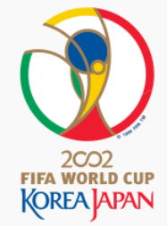
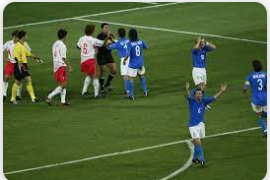
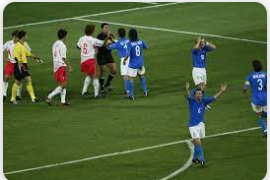
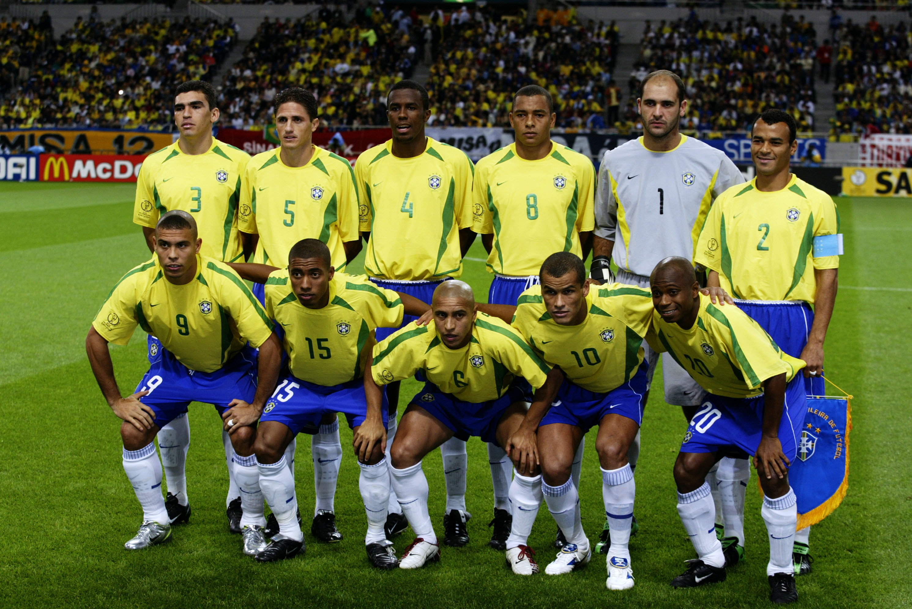

COPA DO MUNDO DE 2002

historia da copa do mundo de 2002
Copa do Mundo (português brasileiro) ou Campeonato do Mundo de Futebol (português europeu) FIFA de 2002 foi a
décima sétima edição da Copa do Mundo FIFA de Futebol que reuniu 32 equipes entre 31 de maio a 30 de junho. O
Brasil conquistou pela quinta vez o título mundial, depois de derrotar a Alemanha na final.
Foi a primeira vez que dois países sediaram unidos o evento, a primeira vez que três seleções — França, Japão e
Coreia do Sul — estavam classificadas automaticamente e a primeira vez que uma edição da Copa não aconteceu na
Europa ou nas Américas.Foi a última edição do evento onde o campeão anterior do torneio garantia vaga direta na
edição seguinte da
competição. A França, campeã da edição de 1998, foi a última privilegiada por este sistema. A partir do final
deste Mundial, a seleção campeã — no caso, o Brasil — teria que garantir vaga na próxima competição jogando as
Eliminatórias, tendo somente o país-sede do próximo Mundial vaga garantida no certame seguinte, sem a
necessidade de disputar as fases classificatórias. Também foi a última edição onde a partida de abertura era
realizado pelo campeão do torneio anterior — a partir de 2006, a abertura seria realizada pelo país-sede.
A Copa das zebras
Aquele Mundial apresentou ao mundo algumas surpresas. A começar pelo primeiro jogo de todos: no dia 31 de maio de
2002, o Senegal venceu a então campeã do mundo, França, por 1 a 0, gol de Bouba Diop. A comemoração dos
africanos foi uma das imagens mais marcantes daquele Mundial (uma dança em torno da camisa).No dia seguinte,
outra derrota de um campeão do mundo: o Uruguai, de Álvaro Recoba, acabou superado pela
Dinamarca, por 2 a 1. Os dois campeões acabaram eliminados, e Senegal e Dinamarca seguiram adiante.A outra
campeã do mundo que acabou eliminada ainda na primeira fase foi a Argentina. Comandado por Marcelo
Bielsa, o time, que tinha Javier Zanetti, Juan Pablo Sorín, Verón, Ortega, Crespo e Batistuta, ficou em terceiro
no grupo F, atrás de Suécia e Inglaterra.
No grupo D, a seleção portuguesa decepcionou. Mesmo sem nunca ter sido campeã do mundo, a equipe lusa
apresentava um time forte, com Vitor Baía, Fernando Gomes, Petit, Luís Figo e Pauleta. Mas uma derrota por 1 a 0
para a seleção da casa, com duas expulsões portuguesas, acabou custando a vaga, e os sul-coreanos seguiram
adiante junto com os Estados Unidos.
As zebras não pararam por aí: a Coreia do Sul eliminou nas oitavas a Itália, na prorrogação, e nas quartas a
Espanha, alcançando a semifinal. A campanha sul-coreana, porém, acabou marcada pelas polêmicas envolvendo a
arbitragem.
 gol da vitoria de senegal em cima da França

coreia do sul fazendo história no mundial de 2002 em jogos rodeado de polemicas com a arbitragem
gol da vitoria de senegal em cima da França

coreia do sul fazendo história no mundial de 2002 em jogos rodeado de polemicas com a arbitragem
A "Família Scolari"
A seleção brasileira chegou para a Copa como havia sido quatro anos antes: com um polêmico corte de Romário. O
atacante disparou contra o técnico Luiz Felipe Scolari, que preferiu apostar em Ronaldo, então Ronaldinho, que
lutava para se recuperar de uma grave lesão no joelho.
Ronaldo foi uma aposta de Felipão, que formou na Ásia a "Família Scolari". Deixando de fora os bad boys, e aí
incluindo também o nome de Djalminha, Felipão escolheu seus jogadores de confiança e fechou o grupo.
A estreia, contra a Turquia, não foi nada fácil. Ficou marcada pela simulação de Rivaldo, que levou a mão no
rosto ao levar uma bolada na coxa. E pelas defesas de Rustu. Os turcos ainda foram ao intervalo em vantagem, com
gol de Hasan Sas.
Na segunda etapa, Ronaldo mostrou estar em forma: arrancou e se jogou na bola para empatar após levantamento da
canhota. E Rivaldo, depois de um polêmico pênalti em Luizão (a falta pareceu fora da área), garantiu o triunfo
por 2 a 1.Os outros dois jogos do grupo foram mais tranquilos para o Brasil: 4 a 0 na China, o jogo do petardo
de Roberto
Carlos, e 5 a 2 na Costa Rica, a partida do golaço de bicicleta de Edmílson.
Nas oitavas de final, a Bélgica fez jogo duro. "O mais difícil" da Copa, diria depois Felipão. A seleção belga
chegou a esboçar a vantagem em cabeçada de Marc Wilmots no primeiro tempo, mas a arbitragem anulou o lance
acusando falta em Roque Júnior. Um erro lamentado eternamente pelos belgas.
Os brasileiros ainda se valeram de algumas grandes defesas de São Marcos para voltar ao jogo e, aos 22 minutos,
Rivaldo recebeu de Ronaldinho na meia-lua, matou no peito e girou com imensa categoria para acertar um chutaço e
estufar a rede. Para matar o jogo, Kléberson arrancou em contragolpe e mandou para Ronaldo carimbar a
classificação.
O Brasil passou também com drama pela Inglaterra, nas quartas, superando um gol de Michael Owen e a expulsão de
Ronaldinho Gaúcho. Antes de receber o vermelho, o Dentuço garantiu a virada com gol de falta inesquecível,
surpreendendo David Seaman. Rivaldo tinha empatado a partida antes.
A semifinal foi um outro jogo duro contra a Turquia, que havia eliminado Japão e Senegal. De bico, Ronaldo
marcou o único gol da partida e garantiu a vaga na decisão.
 Ronaldo balança a rede na decisão depois de deixar oliver kahn no chão
Ronaldo balança a rede na decisão depois de deixar oliver kahn no chão
Ronaldo e Rivaldo superam gigante Kahn
A Alemanha foi a adversária do Brasil na grande final. Com uma talentosa seleção, os alemães deixaram pelo
caminho Paraguai, Estados Unidos e a Coreia do Sul, mas todas vitórias por 1 a 0.
Apesar de ter um bom time, a Alemanha teve o protagonismo do goleiro Oliver Kahn, eleito na semana da decisão o
melhor jogador daquela Copa. Mas Ronaldo e Rivaldo mostraram ao mundo a realidade.
A decisão disputada em Yokohama, e apitada pelo bom árbitro italiano Pierluigi Collina (uma raridade em um
Mundial marcado por más arbitragens), terminou em samba.
Ronaldo, com seu cabelo "Cascão", colocou Kahn no bolso. Foi exatamente de uma falha do goleiro, um rebote de
chute de Rivaldo, que Ronaldo marcou o primeiro gol da decisão, provando ao mundo que estava de volta ao alto
nível.
O jogo foi aberto, e os alemães também tiveram algumas chances, mas a vitória brasileira acabou incontestável.
Kléberson mandou bola para Rivaldo, que deixou passar e Ronaldo bateu no canto para dizer ao mundo que o Brasil
era pentacampeão mundial!

Brasil Penta campeão
Estadios da copa 2002
Estádio da Copa do Mundo de Seul

O Estádio da Copa do Mundo de Seul é um estádio localizado em Seul, na Coreia do Sul.
Inaugurado em Dezembro de 2001, tem capacidade para 66.704 torcedores. Recebeu três partidas da Copa do Mundo de
2002, incluindo o jogo de abertura entre França e Senegal e a semi-final entre Coreia do Sul e a Alemanha, com
vitória alemã por 1 a 0, gol de Michael Ballack.
Atualmente é a casa do time de futebol FC Seoul, da primeira divisão do Campeonato Sul-Coreano ( a K-League).
Recebeu 3 jogos da copa de 2002.
Daegu Stadium

O Daegu Stadium (Estádio da Copa do Mundo de Daegu), apelidado de Blue Arc (Arco Azul) é um estádio localizado na
Daegu, na Coreia do Sul.Inaugurado em Maio de 2001, tem capacidade para 68.000 torcedores. Foi utilizado para
jogos da Copa do Mundo de
2002.Atualmente é a casa do time de futebol Daegu FC, da K-League.recebeu 4 jogos da copa de 2002.
Estádio Busan Asiad

O Estádio Busan Asiad ou Estádio Asiad Main é um estádio localizado na cidade de Busan, na Coreia do Sul.
Inaugurado em julho de 2001, foi construído para os Jogos Asiáticos de 2002, sendo também utilizado para
partidas na Copa do Mundo de 2002, co-realizada por Japão e Coreia do Sul. Tem capacidade para 56.000
torcedores.
Atualmente é casa do time de futebol Busan I'Park, clube da primeira divisão sul-coreana (a K-League).
Incheon

Incheon , Inchon ou Inch'on é uma cidade e importante porto da Coreia do Sul situada
na costa ocidental do país, a oeste da capital Seul , de cuja aglomeração urbana faz parte. Constitui
uma cidade metropolitana (ver Subdivisões da Coreia do Sul), pelo que o seu nome completo é Cidade Metropolitana
de Incheon . O nome Inchon ou Inch'on vem da anterior forma de transliteração
(sistema de McCune-Reischauer): Inch'ŏn Kwang'yŏksi.
Incheon tem cerca de 2,5 milhões de habitantes e uma área de 964,53 km², dos quais 21% estão cobertos por
arrozais e 44% por floresta. O local é habitado desde o Neolítico. A sua importância moderna deve-se à sua
localização num estuário, o que a torna num bom porto marítimo. Antes da fundação do porto em 1883, a cidade,
então chamada Chemulpo, tinha uma população de apenas 4700 habitantes.
Ulsan Munsu Football Stadium

O Munsu Cup Stadium (também conhecido como Big Crown Stadium ou Estádio Grande Coroa) é um estádio localizado na
cidade industrial de Ulsan, na Coreia do Sul.
Inaugurado em 28 de Abril de 2001 com o amistoso entre Coreia do Sul e Brasil, com vitória coreana por 1 a 0,
tem capacidade para 44 470 torcedores. Sediou jogos da Copa das Confederações de 2001 e da Copa do Mundo de
2002.Atualmente é a casa do time de futebol da K-League Ulsan Hyundai Horang-i.recebeu 3 jogos da copa das
confederações e 3 da copa de 2002
Suwon World Cup Stadium

O Suwon World Cup Stadium (Estádio da Copa do Mundo de Suwon), também conhecido como Big Bird Stadium (Estádio
Grande Pássaro) é um estádio localizado em Suwon, na Coreia do Sul.
Inaugurado em Maio de 2001, tem capacidade para 43.288 torcedores. Foi utilizado para três jogos da Copa das
Confederações de 2001 e para quatro jogos da Copa do Mundo de 2002.
Atualmente é utilizado pelo Suwon Samsung Bluewings, time de futebol da K-League.recebeu 3 jogos da copa das
confederações e 4 da copa do mundo.
Gwangju World Cup Stadium

O Estádio Guus Hiddink é um estádio localizado em Gwangju, na Coreia do Sul.
Inaugurado em Setembro de 2001 como Gwangju World Cup Stadium, recebeu o nome do treinador da Seleção
Sul-Coreana de Futebol, o holandês Guus Hiddink, após a seleção bater a Espanha nos penâltis, nesse mesmo
estádio e avançar, pela primeira vez na história, as Semi-Finais da Copa do Mundo.
Atualmente é a casa do Gwangju FC, time de futebol da K-League.
Jeonju World Cup Stadium

Inaugurado em Setembro de 2001, o Jeonju World Cup Stadium é um estádio de futebol localizado na cidade de
Jeonju, na Coreia do Sul. Foi sede de três jogos da Copa do Mundo de 2002, realizada na Coreia do Sul e no
Japão.Atualmente, é o estádio onde o clube Chonbuk Motors manda seus jogos.recebeu 3 jogos do mundial.
Daejeon World Cup Stadium

O Daejeon World Cup Stadium (Estádio da Copa do Mundo de Daejeon), também conhecido como Purple Arena (Arena
Púrpura) é um estádio localizado em Daejeon, na Coreia do Sul.
Inaugurado em Setembro de 2001, tem capacidade para 40.400 torcedores e foi palco de alguns jogos da Copa do
Mundo de 2002. Atualmente é a casa do Daejeon Citizen, time de futebol da K-League.3 jogos do mundial.
Jeju World Cup Stadium

O Estádio da Copa do Mundo de Jeju é um estádio localizado na cidade de Seogwipo, na ilha de Jeju, na Coreia do
Sul.
Inaugurado em Dezembro de 2001, tem capacidade para 42.250 torcedores e sediou partidas da Copa do Mundo de
2002.
Atualmente é a casa do time de futebol Jeju United, da K-League.
Estádio Internacional de Yokohama

O Estádio Internacional de Yokohama é um estádio localizado em Yokohama, Japão.
Inaugurado em março de 1998, o estádio tem capacidade para 72.327 torcedores e é casa do time de futebol
Yokohama F. Marinos, da J-League.Sediou três jogos da primeira fase da Copa do Mundo de 2002 e a grande final
entre Alemanha e Brasil, com a
vitória brasileira por 2x0 (com gols de Ronaldo).
Em 1 de Março de 2005, o nome do estádio mudou para Nissan Stadium devido ao patrocínio da montadora de
automóveis Nissan para somente os jogos nacionais com contrato ate dia 28 de fevereiro 2010 e depois foi
renovado até 2016, E nos jogos internacional usam o nome de Internacional Stadium Yokohama.
Foi a principal sede da Copa do Mundo de Clubes da FIFA nas edições de 2005, 2006, 2007, 2008, 2011, 2012, 2015
e 2016, sendo o palco inclusive das conquistas de São Paulo em 2005, do Internacional em 2006 e do Corinthians
em 2012. O local também sediou as três últimas edições da Copa Intercontinental. Foi uma das sedes do futebol
nos Jogos Olímpicos de Verão de 2020, recebendo alguns jogos das eliminatórias e a final masculina.
O lugar original, foi palco de shows de muitos cantores, como Madonna que realizou três show da histórica Blond
Ambition World Tour em abril de 1990 e Michael Jackson que se apresentou no estádio na primeira fase da sua
aclamada Bad World Tour, entre setembro e outubro de 1987.
Estádio Saitama 2002

O Estádio Saitama 2002 , também chamado Estádio Saitama ou Saisuta é um estádio localizado na cidade de Saitama,
no Japão.
Inaugurado em Setembro de 2001, tem capacidade para 63.700 torcedores. Recebeu quatro partidas da Copa do Mundo
de 2002.É utilizado pelo time de futebol Urawa Red Diamonds da J-League.Foi usado durante os Jogos Olímpicos de
Verão de 2020 nas partidas de futebol, recebendo alguns jogos das
eliminatórias, semifinais e a disputa do bronze masculino.recebeu 4 jogos da copa.
Estádio Shizuoka Ecopa

O Estádio Shizuoka Ecopa é um estádio localizado na cidade de Fukuroi, no Japão.Inaugurado em Março de 2001, o
estádio tem capacidade para 50.000 torcedores e conta com uma pista de Atletismo.
Recebeu alguns jogos da Copa do Mundo de 2002.
Estádio Nagai

O Estádio Nagai é um estádio localizado em Osaka, Japão. É a casa do Cerezo Osaka.Inaugurado em Maio de 1996,
recebeu partidas da Copa do Mundo de 2002 e o Campeonato do Mundo de Atletismo de 2007, além de receber as
primeira e as demais finais da Copa Suruga Bank, até 2011.recebeu 3 jogos da copa.
Estádio de Miyagi

O Estádio Miyagi é um estádio de futebol localizado em Miyagi, no Japão. Tem capacidade para 49.133 torcedores.
Recebeu três partidas da Copa do Mundo de 2002.É utilizado pelo clube de futebol Vegalta Sendai, da J-League.
Recebeu as partidas eliminatórias e as quartas de final do futebol nos Jogos Olímpicos de Verão de 2020.3 jogos
nesse estádio na copa.
Estádio Big Eye

O Estádio Ōita ou Estádio Big Eye (Grande Olho) ou ainda Ōita Bank Dome (por causa de um patrocinador) é um
estádio fechado localizado na cidade de Oita, no Japão.O estádio tem um sistema de teto retrátil parecido com o
do Rogers Centre de Toronto, e dando a impressão, visto
de cima, de um olho abrindo ou fechando.Inaugurado em Maio de 2001, tem capacidade para 43.000 torcedores.
Recebeu três jogos da Copa do Mundo de 2002.Atualmente é a casa do time de futebol Oita Trinita, da J-League.
Estádio Big Swan

O Estádio Big Swan é um estádio localizado na cidade de Niigata, no Japão.Inaugurado em Março de 2001, tem
capacidade
para 42.300 torcedores e é casa atual do time de futebol da J-League Albirex Niigata. Recebeu partidas da
Copa das Confederações de 2001 e da Copa do Mundo de 2002 3 em cada competição.
Estádio Kashima

O Estádio Kashima é um estádio localizado na cidade de Kashima, na provincia de Ibaraki, no Japão.
Inaugurado em maio de 1993, tem capacidade para 42.000 torcedores. Recebeu jogos da Copa das Confederações de
2001 e da Copa do Mundo de 2002(3 em cada torneio.). Recebeu também algumas partidas e a disputa do bronze
feminino nos Jogos
Olímpicos de Verão de 2020.Atualmente é casa do time de futebol Kashima Antlers, da J-League.
Noevir Stadium Kobe

O Noevir Stadium Kobe é um estádio localizado na cidade de Kobe, no Japão. Inaugurado em Outubro de 2001,
tem capacidade para 42.000 torcedores e é a casa do time de futebol Vissel Kobe,que disputa a J-League.
Recebeu três partidas da Copa do Mundo de 2002.
Sapporo Dome

O Sapporo Dome é um estádio localizado em Sapporo, na ilha de Hokkaido, norte do Japão.Inaugurado em Março de
2001, com 42.122 lugares, é utilizado em jogos de baseball e futebol. Sediou 3 partidas
da 1ª Fase da Copa do Mundo de 2002.Ficou conhecido pelo seu sistema onde o gramado se movimenta para fora do
estádio (semelhante ao University of
Phoenix Stadium nos EUA e a Veltins-Arena na Alemanha). O Sapporo Dome tem dois gramados: um artificial e fixo
(para jogos de baseball) e um natural e móvel (para jogos
de futebol).Os times mandantes do estádio são o Hokkaido Nippon Ham Fighters de beisebol que disputa a NPB e o
Consadole
Sapporo de futebol que disputa a J. League.Recebeu as partidas eliminatórias do futebol nos Jogos Olímpicos de
Verão de 2020.